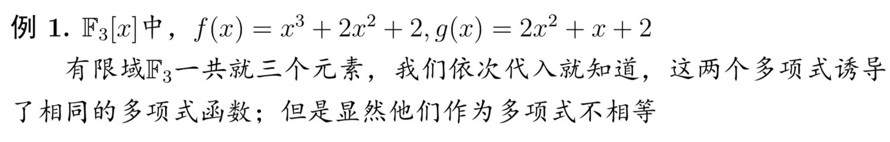
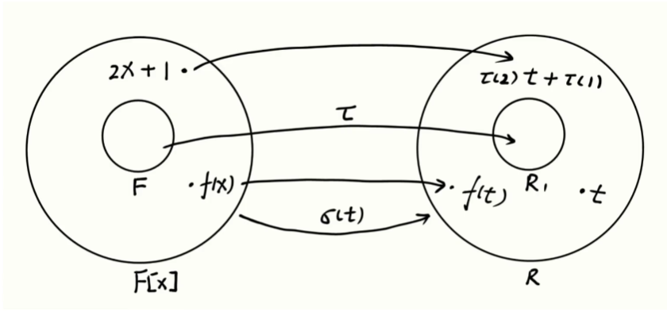

多项式*-
Table of Contents
复习（高等）代数中的多项式
BV1jg411e7qy|
非常棒：BV1tQ4y1c7A3|
1. 定义
非映射（不存在定义域和），是一个形式，可以没有取值。 使用形式幂级数定义这个形式。
有了加法乘法，得到环。 未定元 indeterminate 和未知量 unknown 不同，后者是方程。没有任何含义。
定义:
形式表达式 $$a_nx_n+a_{n-1}x_{n-1}+\cdots+a_1x+a_0$$
称为不定元多项式或整式， x 称为不定元。
2. 参数
最重要参数：次数
参数：系数、不定元、次数
- 系数：（一般限定于）指定数域
- 不定元：数域之外，任意取（即不能取代数元）
- 次数：自然数
国内都把x叫做未定元，关于x的形式表达式定义成多项式蛮容易让人困惑的。 其实柯斯特利金卷一的多项式讲得就那蛮清楚的， 定义成仅含有限非零项的无穷序列，乘积定义成离散序列卷积，然后再给出形式表达式。
加法是有差异的，特殊的，但不做区分
考虑所有这样的集合：组成环 \(F(+,\cdot)\)。 对加法交换群，乘法是幺半群
定义： 域 \(F\) 上一元多项式组成的集合记作 \(F[x]\) 称作一元多项式环。
3. 诱导多项式函数
构造一个代入多项式的映射： 将数域的值代入 ？同时涉及代入运算
多项式函数 \[f:F\to F\] \[t\mapsto a_nt^n+\cdots+a_1t+a_0\]
这是一个函数，判定条件不同：
| 类型 | 判定相等条件 | |
|---|---|---|
| 多项式 | 形式表达式 | 完全相同 |
| 多项式函数 | 映射 | 定义域、值域、对应规则 |
合同：两个多项式诱导相通的多项式函数
相同 \(\Rightarrow\) 合同
数域上成立（实数复数），一般的

例: \(\mathbb{F}_3[x]\) \(f(x)=x^3+2x^2+2,g(x)=2x^2+x+2\)
012 模3
有限域不成立，需要无穷多元素
合同与相同：相等强于合同，本质上是两个纬度一个是形式，一个是映射
4. 意义
明明多项式函数更有意思，可以分析， 没有【意义】的多项式更具体的定义有什么【形式】意义？
正是因为多项式没有意义，就意味着它的意义没有受到限制， 我们可以自由地赋予意义。
强大之处在于，它不仅可以代入系数域中的元素， 还可以代入更一般的元素，进行拓展的运算，进而发现普世的规律
4.1. 一元多项式通用性质

域 \(F\) 相当于是环 \(F[x]\) 的子环，是系数为零的多项式集合
保持运算『同态』。 如，研究矩阵多项式
交换环 \(R\) 是域 \(F\) 上的扩环，意为有 \(\tau:F\to R_1\overset{\text{ring}}{\subset} R\) 环中任意元素 \(t\) 可以诱导出环同态 \(\sigma(t):F[x]\to R\)
\begin{equation}
\label{eq:1}
\sigma(t): \sum\limits_{j=0}^na_jx_j\mapsto\sum\limits_{j=0}^n\tau(a_j)t^j
\end{equation}
称 \(\sigma(t)\) 为把 t 代入 x ，同态像称为 t 的定元多项式
把多项式送到多项式：
- 系数 \(a\mapsto \tau(a)\) 映到
5. 性质
重要性质：是否可约
隐形定义可交换
添加性质更好－扩域
多元多项式环 \(F[x,y]=F[x][y]\) 依次添加